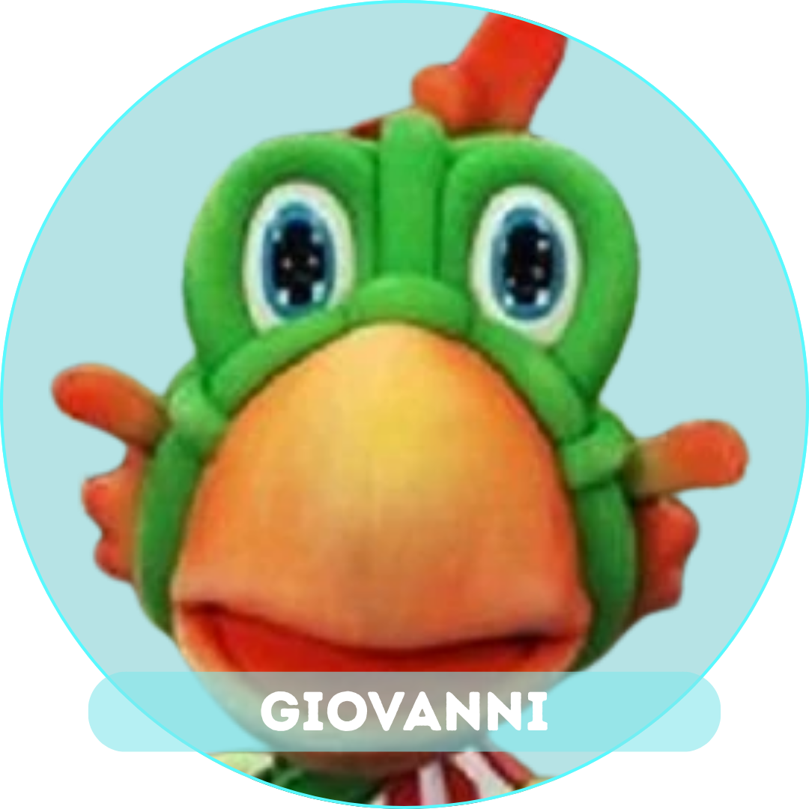
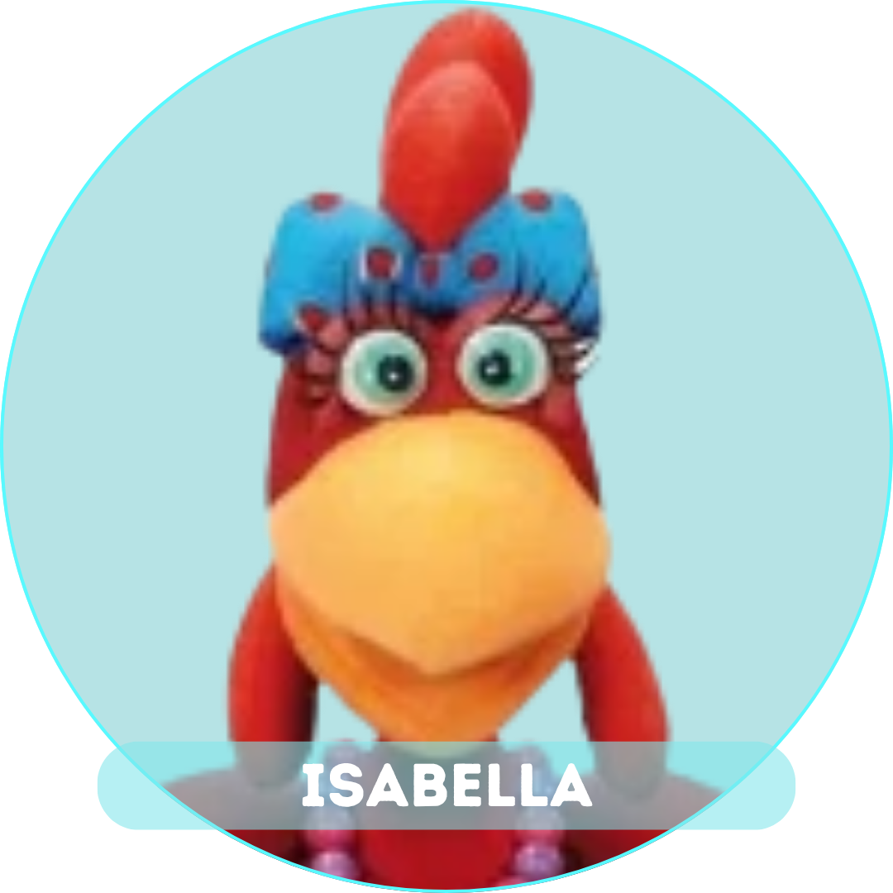
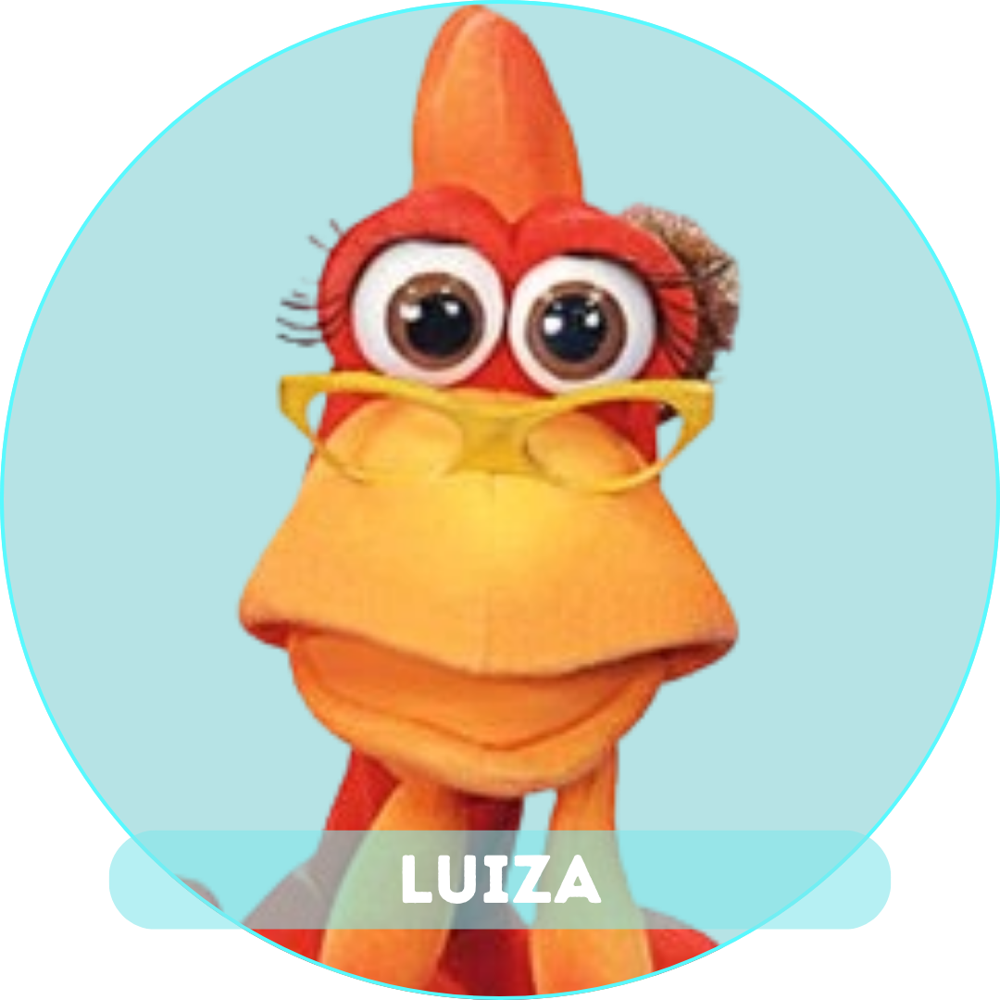
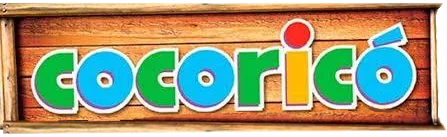

Esse projeto foi desenvolvido com o uso de HTML, CSS e JavaScript, trazendo uma interface
mais ilustrativa, rápida, suave e com alta performance.
Isso, por meio de um navegador qualquer de internet, o usuário poderá executar o projeto e
rodar o "quiz" com grande facilidade.